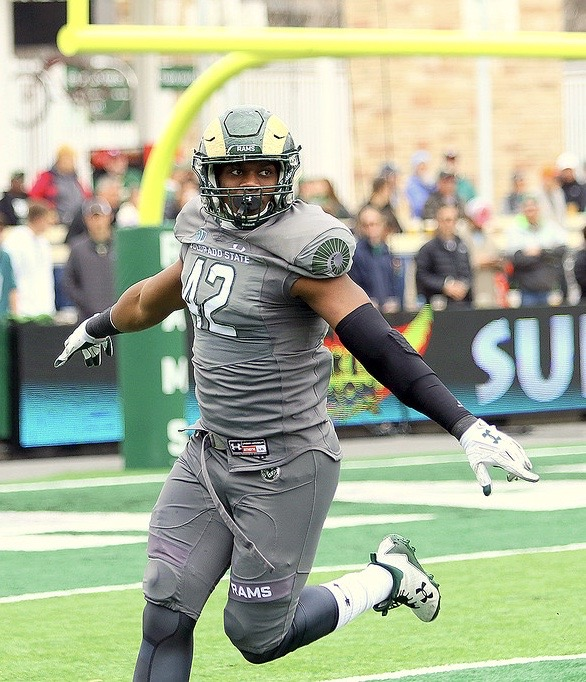

About Arjay Jean
I was born and raised out of North Miami Beach, Florida. Growing up, I have always been into martial arts, ninjas, science fiction, and sports. All these things led me to fitness because I wanted to be as fast, strong, athletic, and physically imposing as the fictional characters and athletes, I admired.
As I was trying to be like Batman, the Teenage Mutant Ninja Turtles, or the athletes I looked up to, I had no direction for my life. I had no idea what I was going to do for a career or how I was getting to college. That is when my mom challenged me with an ultimatum. "Either join the military or receive a scholarship." At the time, I thought the military meant getting shot at for a living, so I picked the scholarship.
After a few years of working hard during my time in high school, I achieved that goal. I was able to receive a full-ride scholarship to Colorado State University in Fort Collins, Colorado. After those four years, I closed a chapter in my life. Now, I am on to bigger, better things as I transition my work ethic into a software development or cybersecurity career.
To learn more about my next steps, view my home page.